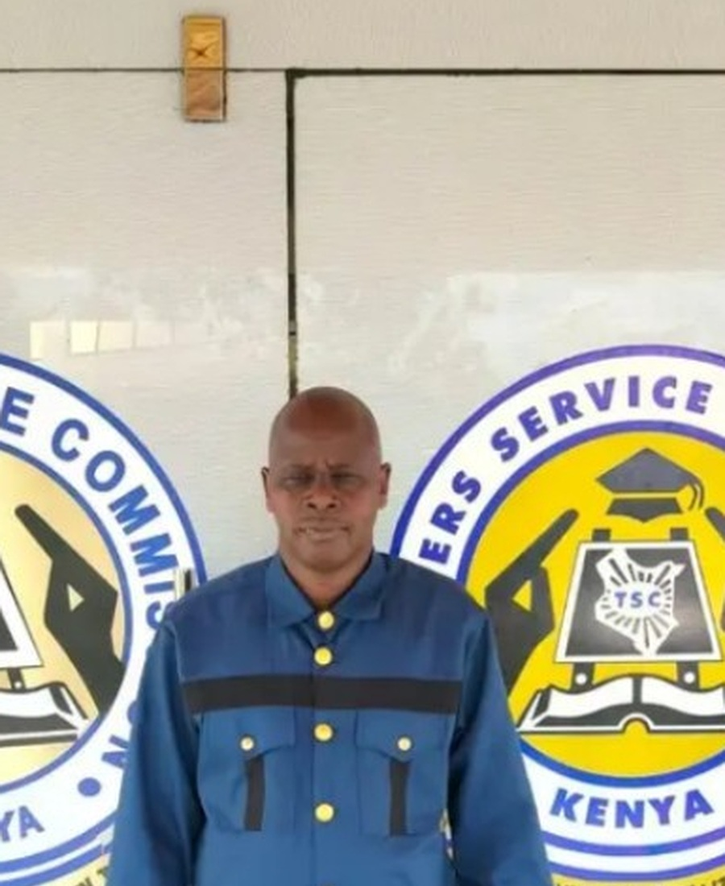
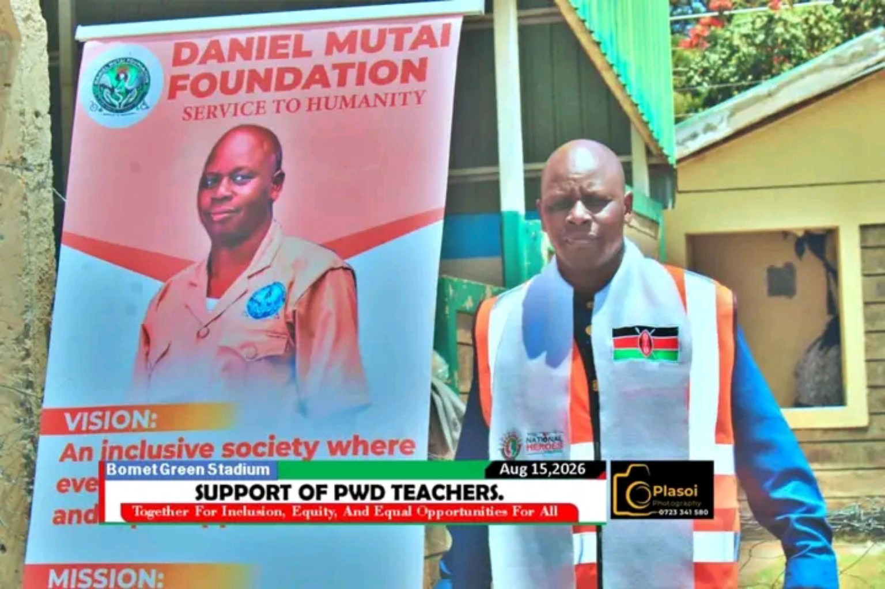

♿
Mobility & assistive devices
Facilitating access to wheelchairs, white canes, artificial limbs and other mobility support.
Documented activity
HSC Head of State Commendation
Teacher · Humanitarian · Disability Advocate
18+ years turning compassion into action — from a classroom in Bomet to communities across Kenya, connecting people with mobility support, education, healthcare and dignity.
The person behind the record
Daniel Mutai's humanitarian journey began with a practical response to a child who needed mobility. Over the years, that response grew into sustained work connecting people with assistive devices, education, healthcare and other forms of support.
His story is rooted in lived experience, persistence and a belief that dignity should not depend on a person's circumstances. In 2026, that record of service was recognised at national level with the Head of State Commendation.
Read the full story →
A life of service
Daniel's public record includes years of teaching, community mobilisation and humanitarian work. He has worked with well-wishers and organisations to help people access mobility aids and other support, often travelling long distances using public transport or a motorcycle.
It is gratifying to assist a person in need.
Public record informed by reporting from Nation Media Group and material supplied for this portfolio.
Areas of service
Each pillar will carry its own evidence-backed case studies as project records and beneficiary documentation are catalogued.
Facilitating access to wheelchairs, white canes, artificial limbs and other mobility support.
Documented activityHelping children with disabilities overcome barriers to school access and participation.
Education · InclusionSupporting water tanks, rainwater harvesting and sanitation initiatives in schools.
Community infrastructureConnecting people requiring eye care with organisations and facilities able to provide assistance.
Health accessMobilising resources and practical assistance for people facing difficult circumstances.
Humanitarian supportHelping vulnerable families move from makeshift shelter toward decent, durable housing — from materials and furniture to construction.
Fully documented projectFeatured story
A reported example from Kaling Primary School describes a pupil who had previously been carried on another pupil's back for about three kilometres to reach school. Daniel facilitated a wheelchair for the pupil.
The significance is larger than the device itself: mobility can affect school attendance, independence, participation and dignity.
Recognition
The portfolio maintains a structured archive of awards, honours and institutional recognition, with certificates and external references added as evidence is verified.
See the full recognition record →
Build the next chapter
Daniel's work faces practical constraints — transport, access to assistive devices, beneficiary documentation and the cost of reaching remote communities. This platform is designed to make those needs clearer and easier to support.